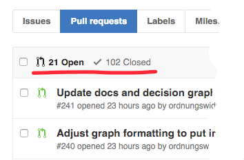
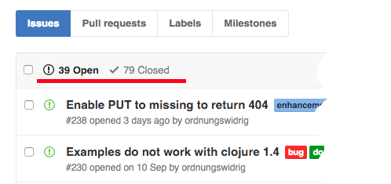
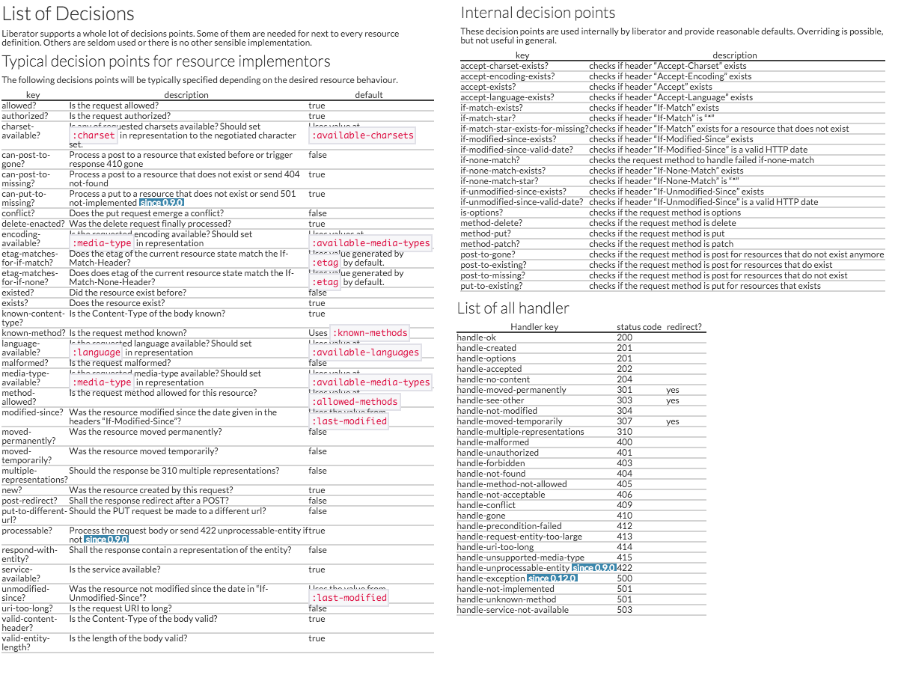
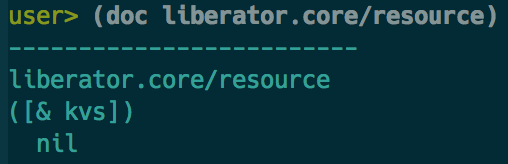
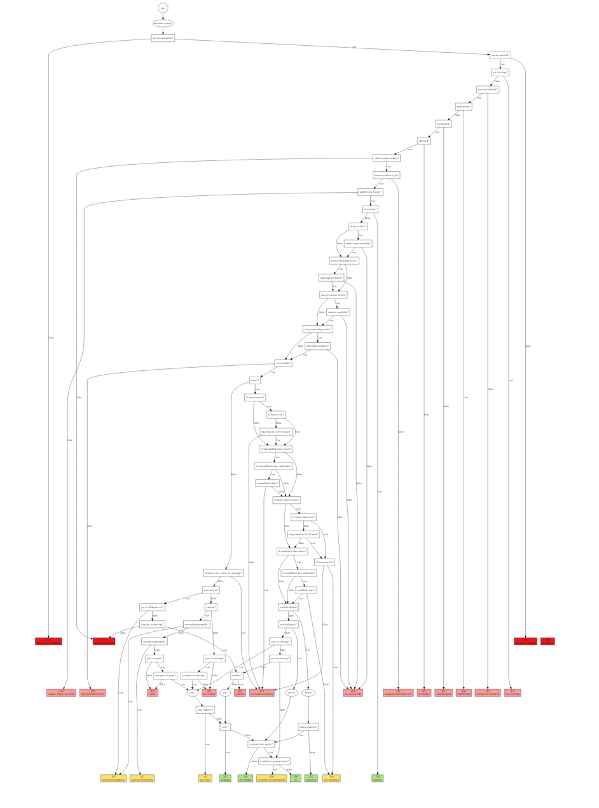

Whoops - I did the api wrong
clojure/conj Philadelphia, PA 2015
Philipp Meier – mailto:philipp@meier.name – @ordnungswprog
Motivation for this talk
Creator and Maintainer of liberator
Released to the public in 2009
320 commits for far
you can create quite some mess
People are really using it
Whoops, changing stuff might break other people's code
Users need to keep up with changes
 _
_
Changing the API will break other people's code
Oh no! Suffering from bad, early decisions
 
That escalated quickly
Why is this bad?
If you cannot change the interface then you cannot provide the best access to features
Users overlook features
Users eventually reinvent features
Stimulates creativity in users
stimulating creativity is undesired
work arounds
workarounds are undocumented
- hidden knowledge
- promote cargo culting
- eventually they are obsolete…
- …and increase the burden of backward compatibility
wrapping
- "I like you library but not your api"
- necessary to ease clojure access to java apis
- new features not supported in wrapping layer
- wrapping layer hides new features
shoe horning
square pegging
square pegging - it works
you know that expression?
they know that you are going to maintain this
Phantom bugs
API encourage simple mistakes which are hard to find
A case of miscommunication
- Order 500m of cable
- Receive 500ft of cable
- Curses being exchanged between over the atlantic ocean
Docstrings
GREEN
Error handling
Use a dedicated error handling model
- exceptions
- special return values
- error state
Whatever error model you choose
- document
- be consistent
- it's part of the API
Blush time
Short sighted interface design in the wild
Staring… my code
Guest appearance by other people's code
Too many knobs
Liberator knobs  _
Not so many docstrings…
 _
Phantom bugs!
(defresource frobnicator [db id] :exists (fn [ctx] {::frob (load-from-db db id)}) :e-tag (fn [{frob ::frob}] (:_version frob)) :handle-not-found (fn [ctx] (format "Frob not found with id %s" id)) :handle-ok (fn [{frob ::frob} frob]))
Phantom bugs!
(defresource frobnicator [db id] :exists? (fn [ctx] {::frob (load-from-db db id)}) :e-tag (fn [{frob ::frob}] (:_version frob)) :handle-not-found (fn [ctx] (format "Frob not found with id %s" id)) :handle-ok (fn [{frob ::frob} frob]))
Incomposability
Lego composes
Variadic map arguments
…do not compose too well
(defn load-entity [db & {:as opts}] ...)
(def default-opts {:eager true :keywordize false :fetch-depth 5})
(defn load-customer [db id] (apply load-entity db (merge default-ops :query {:id id}))
;; => IllegalArgumentException No value supplied for key: [:fetch-depth 5] clojure.lang.PersistentHashMap.create (PersistentHashMap.java:77)
(apply load-entity my-db (apply concat (merge default-ops :query {:id id}))
Apply concat apply function?
(->> some-opts (apply concat) (apply load-entitiy))
 _
_
Macros
Once you're in macro-land you need stay in macro-land
macro-apply anyone?
(defresource foo :handle-ok "ok")
(def defaults {:exists? (fn [_] (zero? (rand-int 1)))})
(apply defresource bar (merge defaults {:handle-ok "ok"}))
;; => CompilerException java.lang.RuntimeException: Can't take value of a macro: #'liberator.core/defresource, compiling:(/private/var/folders/p1/47jm9vq12g93ry9vf525h7vh0000gn/T/form-init2406362871536982238.clj:1:1)
prevents reuse & promotes code duplication
liberator had to extend the api
find backward compatible way
optional map as first argument
(defresource bar defaults {:handle-ok "ok"})
better stay away from macros
(def bar (resource defaults :handle-ok "ok"))
(def bar (resource (merge defaults {:handle-ok "ok"}))
Incomplete API
Unhandled edge cases…
…lead to workarounds
(fn [ctx] (ring-response "response-body" {:headers {"X-Foo" "bar"}))))
But this is what you need to do
(fn [ctx] ;; workaround until issue #152 is fixed (-> "response-body" (as-response (assoc-in ctx [:representation :media-type] "text/plain")) (assoc-in [:headers "X-Foo"] "bar") (ring-response))))
Clojure users expect nil punning
(defn print-my-stuff [stuff] (println (str "Stuff: " (.toString stuff))
;; => NullPointerException clojure.lang.Reflector.invokeNoArgInstanceMember (Reflector.java:301)
Reflector.java?
Missing error handling
500 INTERNAL SERVER ERROR
;; since 0.12.0 (defresource foo :handle-exception (fn [{e :exception :as context}] ...) ;; hurray ...)
State
State
State?
State!
My God, it's full of atoms
(def system-state (atom {})
(def another-state (atom {})
(def auxiliary-state (atom {})
(def state-manager-state (atom {})
(def yetanother-state (atom {})
Problems with too many atoms
- No coordination between atoms
- Functions no longer referentially transparent
- Functions expect "initialization"
Use Explicit arguments
Use single atom to hold all the system state
Pass the value, not the atom to functions
Example
(def state (atom {:system-state {} :another-state {} :auxiliary-state {} :yetanother-state {}})
*-in is your friend
(defn start-ingest [state file] (start-ingest-in-background file) (assoc-in state [:system-state :ingest :status] :running)) (swap! state start-ingest file)
- Easier to test
- Can use multiple instances
Or use dynamic binding
(def ^:dynamic db) (with-db (connect some-url) (fetch-from-db some-db))
Nice to avoid endless passing of handles
(defn exec [db query] ...) (defn fetch [db entity id] (exec db (build-query entity id))) (defn load-user [db id] (fetch db :user id)) (defn authorized? [db id role] (let [user (load-user db id)] ...))
But what if you want to connect to more than one db?
Fixing it
Out of band documentation
Explain the design motivation
Explain the model and abstractions
TODO Liberator uses the ring interface
;; request {:request-method :get :headers {...}}
;; response {:status 418 :body "I'm a teapot" :headers {...}}
;; request handler (fn [req] {:status 418 :body "I'm a teapot" :headers {...}})
Liberator holds state in the context
;; this is passed as the context {:status ... :request ... :representation ... :resource ... :whatever-you-want ...}
;; every decision function (fn [ctx] (do-something) {:foo "some value"} ;; context update ;; context is "merged" with context update
This is actually documented!
(Insert applause jingle here)
Liberator provides a high level view on what's going on
 _
Protocols
(defprotocol Resource (exists? [ctx] "returns true when the resource currently exists") (existed? [ctx] "returns true when the resoues previosly existed") (handle-ok [ctx] "returns the representation of resource entity") ...)
Microprotocols
Yada
(defrecord StringResource [s last-modified] Representations (representations [_] [{:media-type "text/plain" :charset platform-charsets}]) ResourceModification (last-modified [_ _] last-modified) ResourceVersion (version [_ _] s) Get (GET [_ _] s))
om-next does this
Wrapping it up
API Design is about the users
Plan ahead
Find the right abstraction
convenience (kn-vnyns)
or expressiveness?
Forget everything
take the users perspective
assume nothing
how far do you get only reading docstring
Observer the users
How are they using your library
Search on github
Ask for context and motivation on bug reports
Thank you!
Final words
Talk is licensed [CC BY-SA 3.0 (http://creativecommons.org/licenses/by-sa/3.0)]
Attribution of pictures
Trapdoor: English Lock at en.wikipedia [CC BY-SA 3.0 (http://creativecommons.org/licenses/by-sa/3.0)], from Wikimedia Commons https://upload.wikimedia.org/wikipedia/commons/f/fb/Trapdoor.jpg